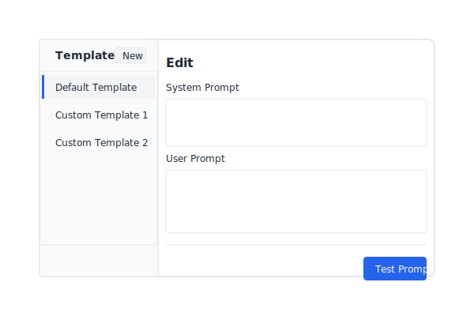
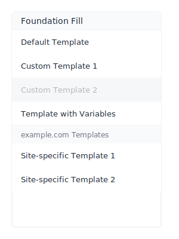
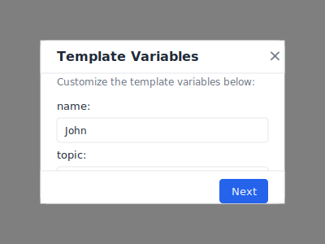

Overview
Foundation Fill helps you quickly populate text fields with custom templates. It's especially useful for:
- Software engineers creating boilerplate code snippets
- Writers using consistent prompts for AI tools
- Support teams using standardized response templates
- Researchers using specific instructions for AI assistants

Features
Template Management
Create, edit, duplicate, reorder, and manage reusable templates for quick access.
Domain-Specific Templates
Configure templates to only appear on specific websites for better organization.
Template Variables
Use {{variable:default}} syntax in your templates for customizable values.
Context Menu Integration
Access your templates with a quick right-click on any text field.
Theming Support
Choose from light/dark/system themes with multiple accent color options.
API Generation
Generate text via customizable API integration with animation during generation.
Getting Started
Installation
From Chrome Web Store (Recommended)
- Visit the Chrome Web Store
page
- Click "Add to Chrome"
- Accept the permissions
From GitHub Releases
- Visit the GitHub Releases page
- Download the latest release zip file
- Extract the zip file to a folder
- Go to
chrome://extensions/
- Enable Developer mode
- Click "Load unpacked" and select the extracted folder
Manual Installation (Development)
- Clone the repository or download the source code
- Run
npm install to install dependencies
- Run
npm run build to build the extension
- Go to
chrome://extensions/
- Enable Developer mode
- Click "Load unpacked" and select the
dist directory
Usage Guide
Creating Templates
- Click on the Foundation Fill icon in your browser toolbar
- Click the "New" button to create a new template
- Enter your system prompt and user prompt
- Your template will be automatically saved

Using Templates
- Right-click on any text field while browsing
- Select your template from the context menu under "Foundation Fill"
- The template content will be inserted into the text field
Organizing Templates
- In the extension popup, drag and drop templates using the handle icon
- The default template will always stay at the top
- Use the duplicate button (copy icon) to create a copy of any template
- Duplicated templates are placed directly after the original template
Domain-Specific Templates
- Edit a template and click the "Domains" button
- Click "Add Current Domain" or manually enter domains
- Templates will only appear on specified websites
Tip: Use wildcards for domains (e.g., *.example.com) to match all subdomains.
Using Template Variables
- Add variables in your templates using the format
{{variable:default}}
- When using the template, you'll be prompted to provide values
- Variables with the same name will use the same value throughout the template

Generating Text with APIs
- Go to Settings by clicking the gear icon
- Enter your API configuration (URL, key, model)
- Use templates with the "Test Prompt" button to generate text
Settings
API Configuration
Configure your preferred LLM API for text generation:
- Base URL: The API endpoint (e.g., https://api.openai.com/v1)
- API Key: Your authentication key (stored securely)
- Model: The model identifier (e.g., gpt-4)
Theme Settings
Customize the extension's appearance:
- Theme: Light, Dark, or System (follows your browser's theme)
- Accent Color: Choose from Blue, Red, Green, Purple, Orange, or Pink
Import/Export
Backup and restore your templates and settings:
- Export All Data: Save your templates and settings as a JSON file
- Import Data: Restore from a previously exported file
Architecture
Foundation Fill follows a Model-View architecture with service-oriented components:
Core Components
- Models: Handle data and business logic (Template, Settings)
- Views: Render the UI and handle user interactions
- Services: Provide reusable functionality (Storage, API, Theme)
- Background Script: Manages context menu and messaging
- Content Script: Fills text fields and manages text insertion
Data Flow
Templates are stored in Chrome Storage and accessed by the background script to populate the context menu.
When a template is selected, it's processed for variables if needed, then sent to the content script for
insertion into the active text field.